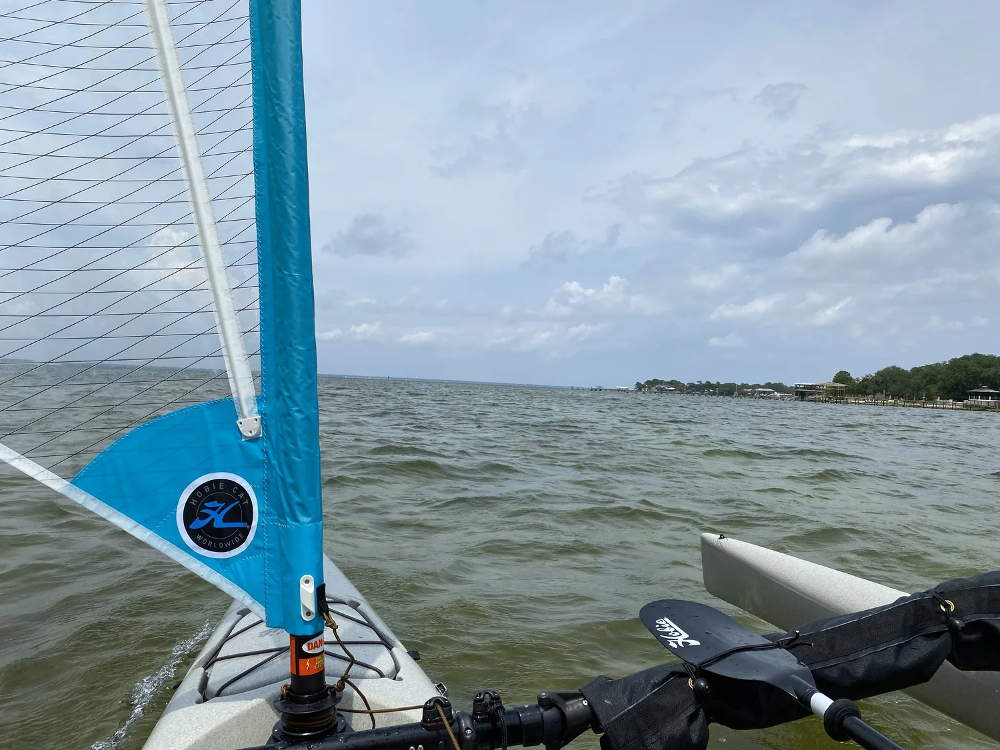
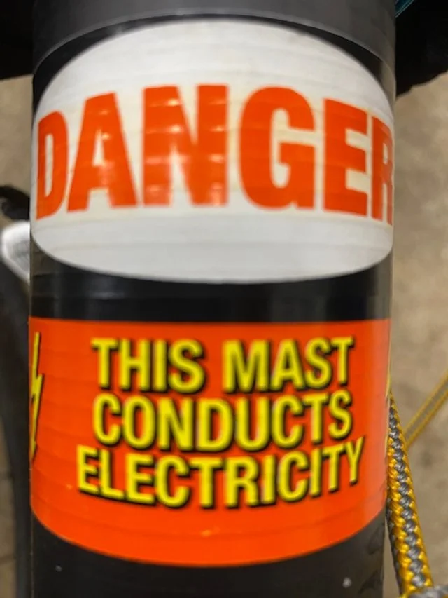
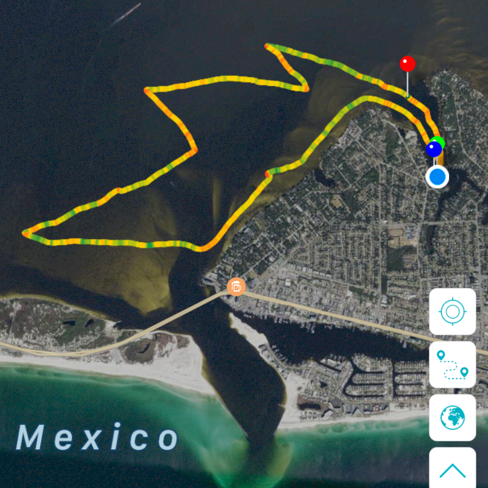

Weather Can Change Quickly

Here we are on Day 2 of our sailing trip. We don’t have an outboard motor, so we have to rely on either the wind, or our peddle/paddle power to get us to safety if the need arises.
 ▶ Watch on YouTube
▶ Watch on YouTubeWatch the video or continue to read. (More detail below. More actual sailing on the video.) Feel free to view both and enjoy!
The weather was beautiful when we started out today to sail Choctawhatchee Bay from Joe’s Bayou in Destin, Florida. But that changed quickly…

Some people have suggested to de-step the mast because it is made of carbon fiber which is a major lightning conductor.

However, lightning tends to strike the tallest point in the area. And in putting more thought into that, we would rather the direct hit be on the mast and not one of our heads. Either way…YIKES!
And, the setup of the Hobie TI appears to be good for directing the charge from the mast bottom directly to the water surface.
So… at the time, we felt as though we should just leave the mast up and get to safety as fast as possible.
